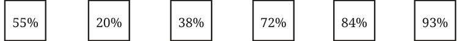

- 1.Express the following fractions as percentages.
- (i)\(\frac{3}{5}\) (ii) \(\frac{7}{14}\) (iii) \(\frac{9}{20}\)
- (iv)\(\frac{72}{150}\) (v) \(\frac{1}{3}\) (vi) \(\frac{5}{11}\)
- 2.Nandini has 25 marbles, of which 15 are white. What percentage of
her marbles are white?
- (i)10% 15% 25%
- (iv)60% 40% (vi) None of these

- 3.In a school, 15 of the 80 students come to school by walking. What
percentage of the students come by walking?
- 4.A group of friends is participating in a long-distance run. The positions
of each of them after 15 minutes are shown in the following picture. Match (among the given options) what percentage of the race each of them has approximately completed.
Start Finish

- 5.Pairs of quantities are shown below. Identify and write appropriate
symbols ‘>’, ‘<’, ‘=’ in the blanks. Try to do it without calculations.
- (i)50% ____ 5% (ii) \(\frac{5}{10}\) ____ 50%
- (iii)\(\frac{3}{11}\) _____ 61% (iv) 30% ____ \(\frac{1}{3}\)
Well, if percentages are just a particular type of fraction, why do we need them? Why can’t we just continue using fractions? Let us consider an example. A biscuit-making factory is experimenting with 2 new varieties of biscuits. Sugar makes up \(\frac{9}{34}\) of Variety 1 and \(\frac{13}{45}\) of Variety 2. Which variety is more sugary? It may not be clear at first glance and we may have to do some calculations. But, when the same information is presented as - Sugar makes up 26.47% of Variety 1 and 28.88% of Variety 2, it is immediately clear which variety is more sugary. If we want to have the same denominator, why choose 100 in particular? Why not 10, 50, 1000, or 43? Think. In principle, we could choose any number as the denominator. But with 100, there are some advantages. Since our number system is base 10, numbers like 10, 100, and 1000 fit easily with decimals. For example,
\(31% = \frac{31}{100} = 0.31\).
Converting between fractions, decimals, and percentages becomes quick and intuitive. The number 100 is round, and easy to understand and work with. We could say “per 1000” or \(\frac{9}{34} = 26.47\) percent (per 100) “per 100,000” (this usage is present in statistics like “per thousand people” or “per lakh”), but \(\frac{9}{34} = 2.647\) per decem (per 10) 100 hits the sweet spot - it’s large enough to give detail, yet simple enough to grasp mentally. Per \(10 \frac{9}{34} = 264.7\) per mille (per 1000)

Long before the decimal fraction was introduced, the need for it was felt in computations by tenths, twentieths, and hundredths. The idea of ‘per hundred’ can be found as early as the 4th century BCE in Kautilya’s Arthaśhāstra, “An interest of a pana and a quarter per month per cent is just. Five panas per month per cent is commercial interest. Ten panas per month per cent prevails among forests. Twenty panas per month per cent prevails among sea traders”. Around the same time, the Romans used taxes of \(\frac{1}{20}\) , \(\frac{1}{100}\) in transactions related to trade and auctions. In the Italian manuscripts of the 15th century, expressions such as ‘xx p cento’, ‘x p cento’, ‘vii p cento’ can be found (equivalent to our 20%, 10%, and 7%).
Percentages Around Us
Percentages are widely used in a variety of contexts. Here are some interesting findings that involve percentages.
average, is about 60% The human body, on water by weight. Ice cream is about \(30 - 50%\) air by volume. population watched at least part of the 2022 45% of the world̛s FIFA World Cup.
Over 80% of the teenagers globally fail to meet the About 99.86% of the An estimated 52% of recommendation of at Solar System̛s mass is the agricultural land least one hour of daily contained in the Sun. worldwide is degraded. physical actvity.